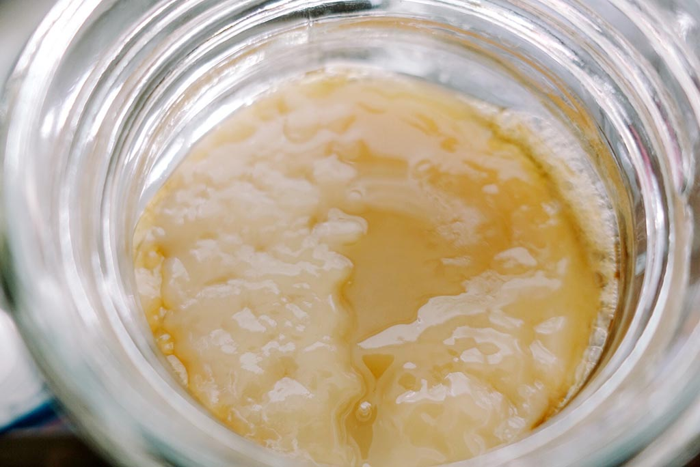

觀光工廠：鹿特丹
「人們如何脫離成為勞動動物的命運？」
標題｜觀光工廠：鹿特丹
類別｜現地創作裝置
・
創作｜反覆分心 Placebo Studio
・
展覽經歷｜
2018
Summer Sessions，荷蘭鹿特丹 V2_ 動態藝術中心
＊此創作計畫獲選參與國立臺灣美術館「2018年科技融藝人才國外駐棧創作計畫」
・
年份｜2018
日常生活中細小的微生物是消費社會的食品生產線上不可或缺的一員，舉凡麵包、酒精、優格等大量商品化的食物皆需利用這些益生菌製作、發酵。益生菌如同社會中無聲的勞工，製作者僅需提供其生存所需即可利用益生菌的產出得到大量獲利，益生菌成為了名符其實的勞動動物，為生產而勞動，因勞動而生存。
資本社會將人類化作勞動動物，透過勞動而獲得報酬並在空閒時進行消費以得到滿足感並確認其生存的意義，也因此必須不斷地勞動得以支撐其消費行為以追求短暫的幸福感，陷入無自由且日復一日的惡性循環之中。
「人們如何脫離成為勞動動物的命運？」
《觀光工廠》透過聲光裝置模擬重現現實社會中的「觀光工廠」，藝術家與用來發酵康普茶的紅茶菌「共同創作」，一起建構出無限生產康普茶的觀光工廠，藝術家如同資本家提供茶菌生存所需的養分和環境，讓茶菌不斷地勞動以製造康普茶，不同茶柱的連結如同生產線將各個彷彿社會群體的茶菌聚落相互連接，並由大眾皆熟知的 Google 翻譯人聲以全球母語使用者最多的中、英、西文三種語言導覽講解。而觀者在觀看作品時，也不可避免地進入了這個消費社會的體制中成為觀光工廠中至關重要的一環——「觀光客」。此計畫始於藝術家參與國立臺灣美術館科技融藝計畫於鹿特丹V2_動態藝術中心駐村期間所創作之作品，希望藉由與微生物的共同創作，探討全球化資本社會下的勞資共生關係與個體化的不確定性，從而進一步反思共生合作的創新可能性。
